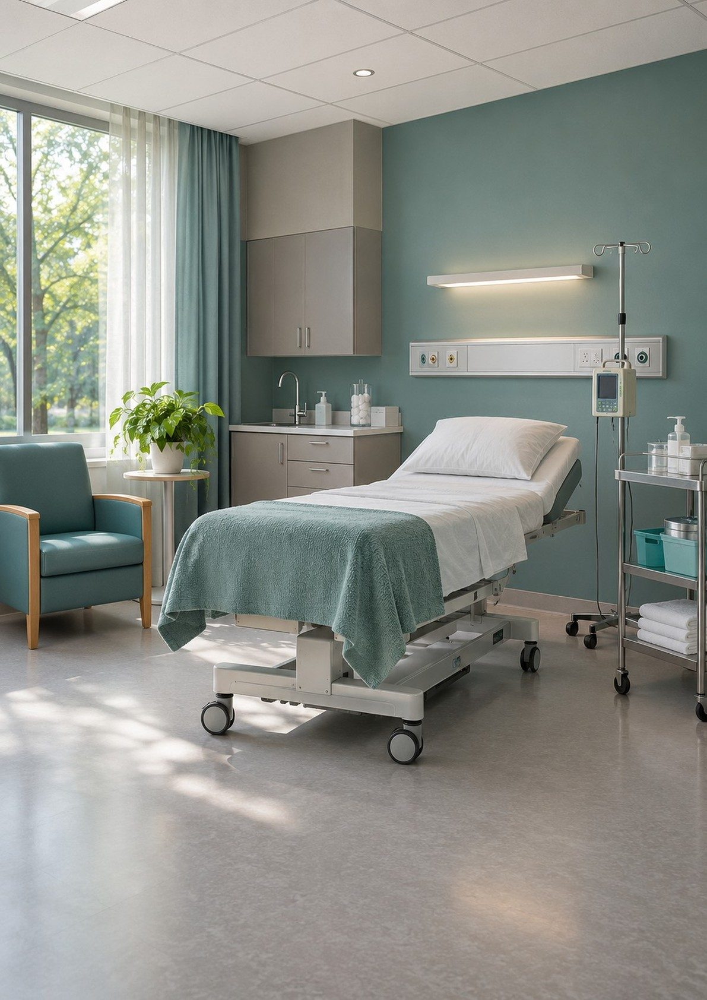
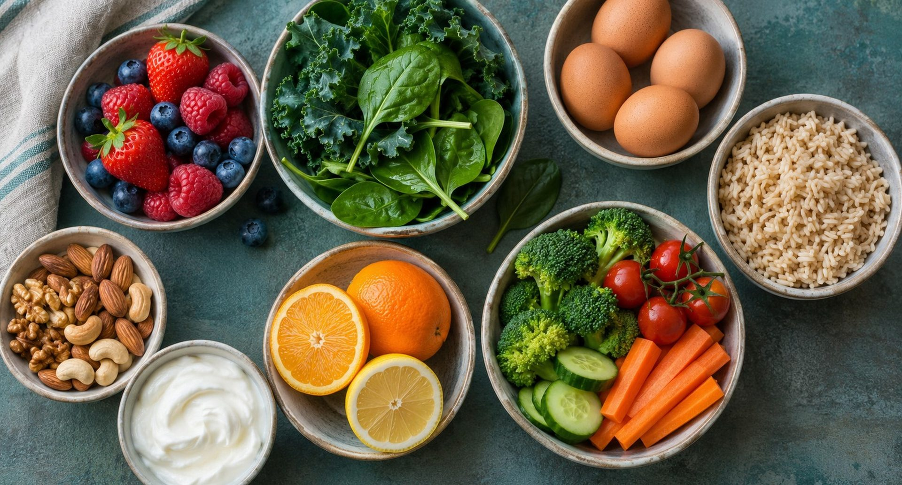
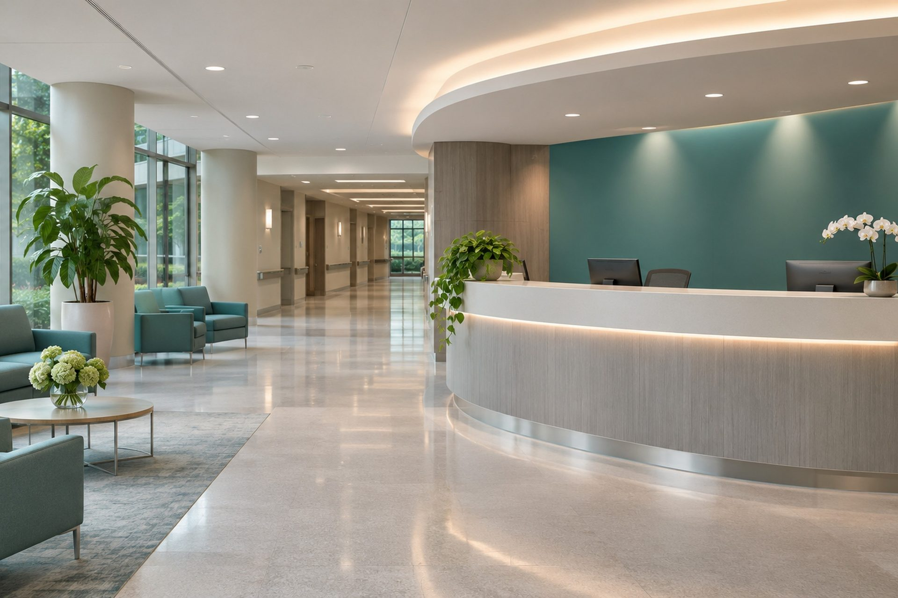
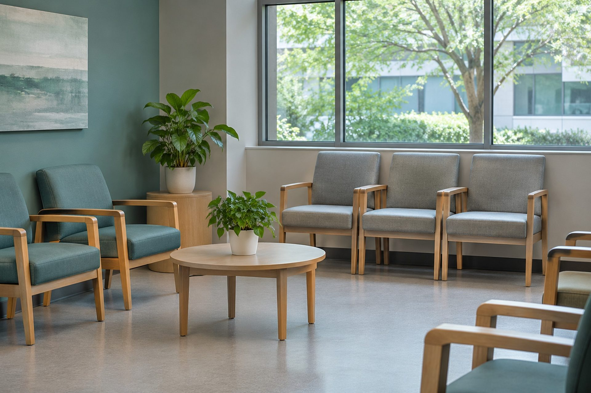
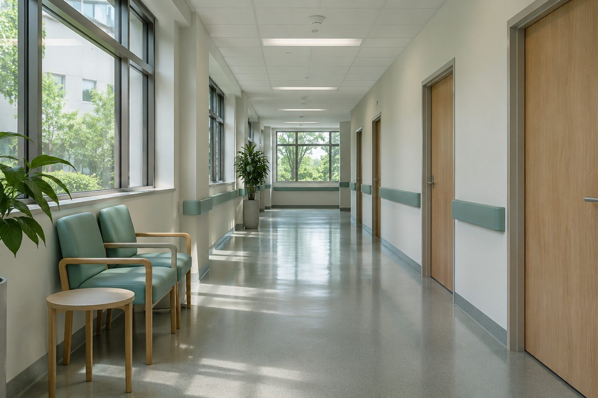

방문 예약
치료실 이용 전 진료와 예약 가능 여부를 확인해 주세요.
치료실 이용 전 확인해 주세요.
이용 가능 시간과 준비 사항은 예약 상황에 따라 달라질 수 있습니다. 방문 전에 대표 전화로 확인해 주세요.

치료실 이용 전 진료와 예약 가능 여부를 확인해 주세요.
치료 일정은 환자별 진료 계획과 운영 상황을 확인한 뒤 안내합니다.
비급여 항목과 적용 금액은 방문 전에 병원에 확인해 주세요.
준비 사항과 주의점은 담당 의료진에게 설명을 요청해 주세요.
예약 변경이 필요하면 예정된 방문 시각 전에 전화해 주세요.
문의할 때 예약자와 예정된 진료 날짜를 알려 주시면 확인에 참고할 수 있습니다.
치료실 예약이 확정되었는지 방문 전에 확인해 주세요.
진료 일정이 달라지면 치료실 이용 일정도 함께 확인해 주세요.
치료를 결정하기 전에 적용 비용과 결제 방법을 문의해 주세요.
치료 전 제출하거나 지참할 자료가 있는지 병원에 확인해 주세요.
예약 당일 도착이 늦어질 경우 대표 전화로 알려 주세요.
치료 뒤 확인할 사항은 귀가 전에 담당 직원에게 문의해 주세요.
전화 문의가 가능한 시간은 병원 운영 안내를 확인해 주세요.
예약 확인을 위해 환자 이름과 생년월일을 준비해 주세요.
치료실 방문 때 준비할 물품이 있는지 예약 안내를 확인해 주세요.
대기 시간이 생길 수 있으므로 방문 시각을 병원에 확인해 주세요.
예약을 이용하지 못하게 되면 가능한 한 빨리 병원에 연락해 주세요.
치료실 운영 안내가 바뀌었는지 방문 전 다시 확인해 주세요.
치료 관련 안내를 들은 날짜와 문의 내용을 적어 두세요.
현재 치료 계획과 이용 일정이 맞는지 담당 진료진에게 확인해 주세요.

운영과 진료 일정 관련 소식을 확인해 주세요.

일반적인 건강 정보를 참고용으로 제공합니다.
개별 상담이 필요하면 대표 전화로 문의해 주세요.
이 페이지는 일반적인 정보 제공을 위한 것입니다. 진단과 치료에 관한 결정은 의료진과 상담해 주세요.


